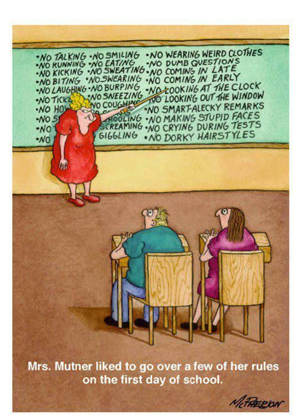

Syllabus
Description
STAT 133 is an introductory-to-intermediate level course to computational data analysis with an emphasis on four major cornerstones:
🔢 Understand common data formats, and principles of data manipulation (e.g. wrangling, reshaping, tidying)
📊 Production of data visualizations and their role in data analysis projects
💻 Learn basic principles for writing code, and programming concepts (with emphasis on data analysis)
⚒️ Use computational tools to carry out the data analysis cycle, organize your workflow, and become familiar with reporting tools (via dynamic documents and web-apps)
🎯 Goals
By the end of the course, students will:
- Construct and execute basic programs in R using elementary programming techniques and tidyverse packages.
- Visualize information and data using appropriate graphical techniques.
- Import data from files or the internet.
- Munge raw data into a tidy format.
- Create visualizations using geospatial data.
- Parse and analyze text documents.
- Create reproducible documents.
- Construct interactive web applications.
🤞 Expectations
This is a computational data analysis course rather than a math or statistics or general programming course. Scripting-based data analysis is a broad topic, so it’s not possible for lecture to provide you with a specific recipe for every situation you may encounter.
Because STAT 133 is one of the core courses for Statistics majors, the underlying intention is to provide foundations for “computing with data” so that stat majors, as well as other data-dependent majors (e.g. Data Science, Applied Math, CogSci, Economics, etc), have the basic computational skills for subsequent upper division courses (e.g. STAT 150, 151A, 152, 153, 154, 155, 157, 158, 159).
We don’t expect that you become a jedi data scientist, an R ninja, or a super coder. That takes YEARS of practice, training, learning, and collaboration. Instead, we want to give you a good foundation around tools for computational data analysis.
ℹ️ Prerequisites
This course does not have any prerequisites, although it would be nice if you have taken an introductory course in statistics (e.g. STAT 2, 20, 21, 131A).
The curriculum and format is designed specifically for students (ideally majoring in Statistics or minoring in Data Science) who have no-or-minimum programming experience. You also don’t need previous data analysis experience—although it helps if you do.
Students with some prior experience in either computational statistics or computing are welcome to enroll, though some parts of the course might feel extremely slow. We recommend that you take more advanced courses unless you need STAT 133 because of your major/minor’s requirements.

🏫 Course Culture
Students taking STAT 133 come from a wide range of backgrounds. We hope to foster an inclusive and supportive learning environment based on curiosity rather than competition. All members of the course community—the instructor, GSIs, students, tutors, and readers—are expected to treat each other with courtesy and respect.
You will be interacting with course staff and fellow students in several different environments: in class, in lab, over the discussion forum, and in office hours. Some of these will be in person, some of them will be online, but the same expectations hold: be kind, be respectful, be professional.
If you are concerned about classroom environment issues created by other students or course staff, please come talk to us about it.
📚 Textbooks
We’ll be using a handful of textbooks (most of them based on the notes I’ve authored for STAT 133 in the last 9 years):
- https://www.gastonsanchez.com/R-coding-basics/
- https://www.gastonsanchez.com/R-tidy-hurricanes/
- https://www.gastonsanchez.com/R-rolling-dice/
- https://www.gastonsanchez.com/R-for-strings/
- https://www.gastonsanchez.com/R-web-technologies/
- https://www.tidytextmining.com/ (by Julia Silge and David Robinson)
🔧 Computational Tools
We will be mainly using the computing and programming environment R (via RStudio) to analyze data in this class. We may also ask you to use a command line interface to interact with your operating system. You do need your own computer to use R and do the assignments.
We don’t expect that students have already been exposed to R. For those who come from Data 8 or some previous coding experience in python, the first labs will help you transfer that knowledge over to R. Both languages are excellent platforms for analyzing data, are widely used in data science, and have their individual strengths. R has been developed within the statistics community specifically for data analysis, while python is a general-purpose programming language but has large data analysis capabilities.
The lectures tend to be focused on the data analysis concepts, while learning how to apply/use them in R tend to be the focus of the labs and assignments. Do not be surprised or worried about not following the details of R code during class—that is not the point (furthermore, there will sometimes be code that is really specific to the instructional purposes of the lecture, e.g. to make a specific plot, and is beyond the scope of what you would be expected to understand or know how to do it by yourself).
⏳ Waitlisted Students and Late Joining
If you are on the waiting list or have a pending application or added the course late, you must still do all coursework and complete labs and homework by the deadlines. We will not be offering extensions/exceptions if you are admitted/enrolled into the course later. So it is your responsibility to stay up to date on the assignments.
Unfortunately, doing all the work is not a guarantee of enrollment. You will only be enrolled if there is space in your lab. Enrollment will proceed by CalCentral.
🚪 Office hours
Me (the instructor) and the GSIs will offer office hours each week across a range of times. You are welcome to visit the office hours of any instructor, not just the ones of your GSI. We may adjust the office hour schedule throughout the semester as we understand student needs and preferences. Please check the office hours tab on the staff page to see the times of the various OH sessions.
I should also say that OH are an opportunity to chat one-on-one with me. If you can, please come to my office hours! Coming to OH does not necessarily send a signal that you are behind or need extra help. On the contrary, coming to office hours early and often tends to co-occur with success in the course. I am happy to chat about the course material, statistics in general, careers in statistics, and whatever other statistics or data science topics are on your mind!
🎒 Group Tutoring
Tutors will offer group tutoring sessions several times each week. This is an opportunity to finish up any assignments that you’ve started in class or review any topics that are confusing for you. You’re welcome to attend any session that works well for your schedule.
Group tutoring is a great place to go to meet other students and collaborate on assignments with tutors on hand to help you get unstuck.
🔬 Labs (10% of final grade)
- Weekly lab discussions are an essential part of the course and we will introduce concepts not necessarily covered in class.
- Thursdays are the official days for lab section.
- You must attend the lab section you are officially enrolled in.
- During lab, you will work on short-form assignments designed to apply the concepts on real and simulated data sets.
- We have designed the labs to be completed within the allotted time (~2 hrs), assuming that you attend section.
- Lab assignments will be released every Thursday (available in bCourses),
- The due date is always on a Friday (please check the assignments tab in bCourses to keep track of deadlines).
- Solutions to lab assignments will be available a few days after their due date.
- We will be giving credit on lab assignments based on completion.
- Submissions within 24 hours after the deadline will receive a 15% deduction. Submissions that are 24 hours or more after the deadline will receive no credit.
- The first lab assignment (lab-1) does not count toward your grade.
- Of all lab assignments (lab-2 to lab-14), your lowest 2 scores will be dropped in the calculation of your overall grade.
📁 Problem Sets (35% of final grade)
- There will be 6 Problem-Set (PS) assignments (available in bCourses).
- PS are long-form assignments designed to apply the concepts you’ve learned in class and lab.
- Starting on week-2 they will be assigned every week, until week-7.
- The due date is always on a Friday (please check the assignments tab in bCourses to keep track of deadlines).
- You must write your own answers (using your own words and/or code). Copy and plagiarism will not be tolerated (see Academic Honesty policy).
- If you don’t submit all required files, you will receive an automatic 10% deduction.
- If you submit the incorrect files, you will receive no credit.
- Solutions will become available a few days (e.g. 3-4 days) after the due date.
- We will drop the lowest Problem-Set assignment score in the calculation of your overall grade.
📂 App Projects (27% of final grade)
- There will be about 3 Shiny App projects.
- These are larger assignments intended to combine many of the ideas from the course, in order to create interactive web-apps.
- As part of the submission you will have to record a video (with screen and face capture) in which you describe how to use your app, and explain the performed analysis and some of the obtained results.
- Starting on week-8 app projects will be assigned about every two weeks, until the end of instruction.
- We will not drop any of the App assignment scores in the calculation of your overall grade.
🕚 Late Policy and HW Assignment Extensions
If you cannot turn in a HW assignment on time, our default policy is:
- Submissions within 24 hours after the deadline will receive a 15% deduction.
- Submissions within 48 hours after the deadline will receive a 30% deduction.
- Submissions that are 48 hours or more after the deadline will receive no credit.
Requesting an extension: If you need to request an extension, regardless of your DSP status, fill out this google form. Submissions to this form will be visible only to the course staff members.
- Any first-time request for a 1-day extension on a problem set assignment, made before an assignment’s deadline, will be guaranteed to be approved, so long as it is made in good faith.
- Any first-time request for a 1-day extension on a shiny app assignment, made before an assignment’s deadline, will be guaranteed to be approved, so long as it is made in good faith.
- Any occasional request for a 2-day extension (requested before an assignment’s deadline) made by a student with a DSP accommodation for assignment extensions will be approved automatically.
Also, please keep in mind that we are dropping the lowest score of your six Problem-set assignments (do not confuse with App projects). This policy is in place to take care of any extenuating circumstances that prevent you from submitting one of these assignments.
Please plan ahead and pace yourself. Don’t wait until the last day to do an assignment. Don’t wait until the last minute to submit your assignments.
📝 Midterm (7% of final grade)
- There will be one midterm assigned on Wed Mar-5th.
- More information about the midterm will be announced as we approach its due date.
- Unless you have approved accommodations, we won’t be able to provide any extensions if you miss the midterm.
📝 Final Exam (21% of final grade)
- There will be one final exam.
- The final exam will be on Wed May-14th (7pm-10pm), as scheduled by the University.
- More information about the final exam will be provided as we approach its due date.
- Unless you have accommodations as determined by the university and approved by the instructor, you must take the exam at the date and times provided here.
- Please check your course schedule and make sure that you can take the final exam on the scheduled date. Otherwise, do not take the class if you are not available at this date.
💯 Grading Structure
Grades will be assigned using the following weighted components:
- 10% Lab (drop 2 lowest scores)
- 35% Psets (drop lowest score)
- 8% App1 (no drop)
- 9% App2 (no drop)
- 10% App3 (no drop)
- 7% Midterm
- 21% Final Exam
To complete the course, you must take the final exam.
To try to keep grading consistent across semesters, I may occasionally curve an individual assignment. I will do this only if I made the assignment or exam harder than I intended, and no one’s scores will decrease as a result of the curve. This will happen very rarely, probably not at all.
To give you a rough idea of the grading scheme, the assignment of letter grades in previous semesters has been as follows:
- 😀 90-100% (Excellent) A-/A/A+ range
- 🙂 80-90% (Good) B-/B/B+ range
- 😐 70-80% (Fair) C-/C/C+ range
- 🙁 60-70% (Deficient) D
- 😞 Below 60% (Failed) F
If you are taking the class pass-fail, the cut-off for passing is 70% (C-).
As a matter of course policy, I do not round up when calculating letter grades. Ex: if your overall score is 79.9999%, then the highest letter grade that you can expect is a C+, not a B-.
There is no curve; your grade will depend only on how well you do, and not on how well everyone else does.
Letter grades are final; I don’t enter into negotiations with students about grades.
Please do not engage in grade grubbing.
Also, please remember that we grade your course performance, not your personal worth.
⚠️ Generative A.I. Policy
Generative A.I. refers to artificial intelligence technologies, like those used for ChatGPT and similar, that can draw on a large corpus of training data to create new written, visual, or audio content.
There are two principles we use to guide our class policy on AI use:
- Cognitive dimension: Working with AI should not reduce your ability to think clearly. The use of AI should facilitate—rather than hinder—learning.
- Ethical dimension: Students using AI should be transparent about their use and make sure it aligns with academic integrity.
In this course, we’ll be developing skills that are important to practice on your own. Because use of generative A.I. may inhibit the development of those skills, the use of these tools is permitted in this course for the following activities:
- Brainstorming and refining your ideas;
- Fine tuning your exploratory/research questions;
- Drafting an outline to organize your thoughts;
- Checking syntax errors or bugs in your code; and
- Polishing your spelling and grammar.
The use of generative A.I. tools is not permitted in this course for the following activities:
- Impersonating you in classroom contexts, such as by using the tool to compose discussion board prompts assigned to you or content that you put into a discussion forum/chat.
- Attempting to pass off AI-generated work as your own.
- Writing a draft of your assignment.
- Writing entire blocks of code, functions, or scripts to complete class assignments.
Please keep in mind that use of generative A.I. tools can impede your learning by generating ideas for you before you had a chance to think of your own ideas; inhibiting the development of your own writing skills; generating factually inaccurate statements or fictional reference sources; etc.
If you are unsure of whether and how much of a submission has been AI-generated, or whether you are in violation of a certain policy, please reach out to us and ask for guidance.
☝️ Academic Honesty
You should not share your code or answers, directly or indirectly, with other students. Doing so doesn’t help them; it just sets them up for trouble on exams. Feel free to discuss the problems with others beforehand, but not the solutions. Please complete your own work and keep it to yourself (e.g. avoid sharing it in hosting platforms like Github or similar). If you suspect other people may be plagiarizing you, let us know ASAP.
We expect you to do your own work and to uphold the standards of intellectual integrity. Collaborating on homework is fine and we encourage you to work together—but copying is not, nor is having somebody else submit assignments for you. Likewise, obtaining and/or using solutions from previous years or from the internet, if such happen to be available, is considered cheating.
Beyond the templates or starting code provided by the teaching staff, any writing, code, media, or other submissions not explicitly identified as AI-generated will be assumed as original to the student. Submitting AI-generated work without identifying it as such will be considered a violation of the Code of Student Conduct.
Cheating will not be tolerated. Any evidence of academic misconduct will result in a score of zero (0) on the entire assignment or examination, and a failing letter grade. We will always report incidences of cheating to the Center for Student Conduct.
If you are having trouble with an assignment or studying for an exam, or if you are uncertain about permissible and impermissible conduct or collaboration, please contact us.
Rather than copying someone else’s work, ask for help. You are not alone in this course! The course staff is here to help you succeed. If you invest the time to learn the material and complete the projects, you won’t need to copy any answers.
✉️ Email Policy
If you wish for your email to make it into our inbox, the subject of your email must contain the text: Stat 133.
Please refer to my email guidelines for more information: communication via email
🚸 Special Accommodations
Students needing accommodations for any physical, psychological, or learning disability, should contact the teaching staff during the first two weeks of the semester, and see http://dsp.berkeley.edu to learn about Berkeley’s policy. If you are a DSP student, please contact us at least three weeks prior to a midterm or final so that we can work out acceptable accommodations.
For relevant DSP accommodations that provide occasional extensions on assignments, please see the above Late Policy.
❗Incomplete Grade
Under emergency/special circumstances, students may petition me to receive an Incomplete grade. By University policy, for a student to get an Incomplete requires (i) that the student was performing passing-level work until the time that (ii) something happened that—through no fault of the student—prevented the student from completing the coursework. If you take the final, you completed the course, even if you took it while ill, exhausted, mourning, etc. The time to talk to me about incomplete grades is BEFORE you take the final (several weeks before), when the situation that prevents you from finishing the course presents itself. Please clearly state your reasoning in your comments to me.
It is your responsibility to develop good time management skills, good studying habits, know your limits, and learn to ask for professional help. Life happens. Social, family, cultural, scholar, and individual circumstances can affect your performance (both positive and negatively). If you find yourself in a situation that raises concerns about passing the course, please contact me as soon as possible.
Above all, please-please-please do not wait till the end of the semester to share your concerns about passing the course because it will be too late by then.
🌻 Safe and Inclusive Environment
Whenever a faculty member, staff member, post-doc, or GSI is responsible for the supervision of a student, a personal relationship between them of a romantic or sexual nature, even if consensual, is against university policy. Any such relationship jeopardizes the integrity of the educational process.
Although faculty and staff can act as excellent resources for students, you should be aware that they are required to report any violations of this campus policy. If you wish to have a confidential discussion on matters related to this policy, you may contact the Confidential Care Advocates on campus for support related to counseling or sensitive issues. Appointments can be made by calling (510) 642-1988.
The classroom, lab, and work place should be safe and inclusive environments for everyone. The Office for the Prevention of Harassment and Discrimination (OPHD) is responsible for ensuring the University provides an environment for faculty, staff and students that is free from discrimination and harassment on the basis of categories including race, color, national origin, age, sex, gender, gender identity, and sexual orientation. Questions or concerns? Call (510) 643-7985, email ask_ophd@berkeley.edu, or go to https://svsh.berkeley.edu/.
🎉 Last But Not Least
The main goal of STAT 133 is that you should learn, and have a fantastic experience doing so. Please keep that goal in mind throughout the semester.